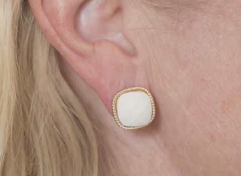
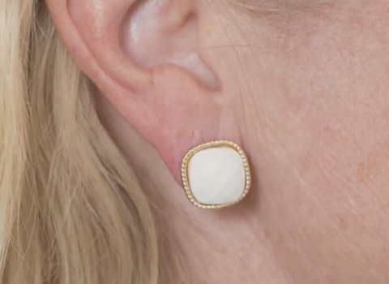

Me gusta: 2 511
Un corrector elegante es una buena opción para una mujer a cualquier edad
 Se ve caro, combina perfectamente con joyas hechas de metales preciosos, bisutería de varios tipos.
Se ve caro, combina perfectamente con joyas hechas de metales preciosos, bisutería de varios tipos.- La propietaria de un accesorio innovador ganará confianza en sí misma.
- El cierre seguro evita la pérdida de pendientes costosos
 El accesorio evitará la posibilidad de pérdida de tus pendientes favoritos.
El accesorio evitará la posibilidad de pérdida de tus pendientes favoritos.
hace 19 horas


 
